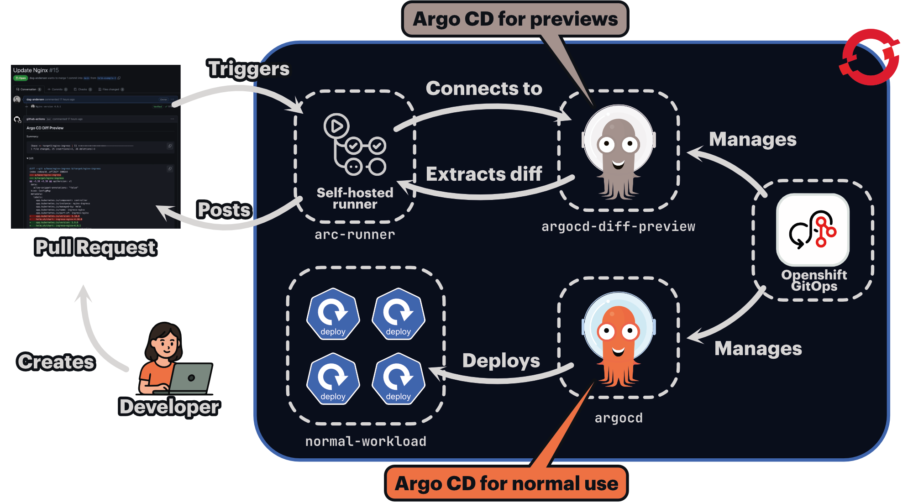

Setup a dedicated ArgoCD instance in Openshift🔗
Running argocd-diff-preview against a cluster that has Argo CD pre-installed combines maximum performance with enhanced security. This approach eliminates both cluster creation overhead and the need to store cluster credentials in your CI/CD pipeline.
Utilizing the Openshift GitOps operator for managing the pre-installed ArgoCD instance comes with low overhead of managing another ArgoCD instance. It is included in the Operator upgrade process and is in line with the ArgoCD instances in the cluster used to deploy applications. In this setup, there is also no need to run argocd-diff-preview as DinD (Docker in Docker) which further increases security. In addition, if there are network settings in place in order to access private repositories outside of the Openshift cluster, this will work right away with this setup. If the main ArgoCD instance is also used to deploy its own configuration (e.g. ssh-known-hosts, tls certs, etc.) in a GitOps way, the instance for argocd-diff-preview can be configured in the same way for faster integration.
Imagine something like this:

How it works🔗
- Configure dedicated ArgoCD instance managed by Openshift GitOps Operator in your cluster in the namespace
argocd-diff-preview - Setup a runner in the cluster and connect it to your CI system
- The runner uses a service account to connect to the host cluster and access the Argo CD instance
- The tool runs exactly as before, but without any credential management complexity and without creating an ephemeral cluster
Setup Guide🔗
1. Create a dedicated ArgoCD instance for rendering previews🔗
- Open the Administrator view in the Openshift UI
- Go to Operators -> Installed Operators -> Red Hat OpenShift GitOps
- In the ArgoCD tab click Create ArgoCD and configure via YAML view
- Provide
argocdas the new name of the ArgoCD instance in the fieldmetadata.name(important as argocd-diff-preview expects that name) - Provide the target namespace in
metadata.namespace(e.g.argocd-diff-preview) in the yaml manifest. - Click Create
By default, this action will create a namespace-scoped ArgoCD instance.
2. Make the new ArgoCD instance cluster-scoped🔗
To provide ArgoCD with enough permissions to read the live state of all namespaces it needs to be cluster-scoped.
- Open the Administrator view in the Openshift UI
- Go to Operators -> Installed Operators -> Red Hat OpenShift GitOps
-
In the Subscription tab click Action -> Edit Subscription
(Alternative is to edit the subcription over command line like so:
oc edit subscription openshift-gitops-operator -n openshift-operators) -
Add the following entry in
5. Click Savespec.config.env(this entry may not exist yet and needs to be added). The value should contain a list of your current GitOps cluster scoped instance namespaces including the new one:
After this change, the Openshift GitOps controller will create a clusterrole and clusterrolebinding for the new ArgoCD instance that allows ArgoCD to read the live state within the cluster.
To check the permissions you can investigate the newly created clusterrole and clusterrolebinding:
oc get clusterrolebindings argocd-argocd-diff-preview-argocd-application-controller -o yaml
oc get clusterroles argocd-argocd-diff-preview-argocd-application-controller -o yaml
An actual sync of an ArgCD application (that won't be triggered by argocd-diff-preview anyway) within this new ArgoCD instance would still fail, as the target namespaces are missing the label argocd.argoproj.io/managed-by=argocd-diff-preview.
Background information
argocd-diff-preview will call argocd app manifest to retrieve the rendered manifests for comparison. For this to work, the ArgoCD application has to be created without errors. Without additional permissions, one will get the following example error for applications that have a target namespace different then the one of the namespace-scoped ArgoCD instance (which will be the case for all diffs):
Failed to load live state: namespace "default" for Service "kustomize-guestbook-ui" is not managed
There is already a feature reuqest opended to make argocd-diff-preview work with a namespace-scoped ArgoCD instance.
3. Configure ArgoCD for private repositories (optional)🔗
To reduce credential handling and private repository configuration in the CI pipeline the configuration can be done once in the dedicated ArgoCD instance. One can add repository credential templates or configure ssh-known-hosts ConfigMap for safe cloning via ssh. This offloads these tasks from the CI run that actually runs argocd-diff-preview which allows for a more lightweight CI integration accross different repositories.
4. Configure RBAC🔗
apiVersion: v1
kind: ServiceAccount
metadata:
name: argocd-diff-preview-access
namespace: argocd-diff-preview
---
kind: Role
apiVersion: rbac.authorization.k8s.io/v1
metadata:
name: argocd-diff-preview-access
namespace: argocd-diff-preview
rules:
- apiGroups: ["*"]
resources: ["*"]
verbs: ["*"]
---
kind: RoleBinding
apiVersion: rbac.authorization.k8s.io/v1
metadata:
name: argocd-diff-preview-access
namespace: argocd-diff-preview
subjects:
- kind: ServiceAccount
name: argocd-diff-preview-access
namespace: argocd-diff-preview
roleRef:
kind: Role
name: argocd-diff-preview-access
apiGroup: rbac.authorization.k8s.io
5. Create a service account token🔗
With the following command a service account token is created in Openshift.
oc create token argocd-diff-preview-access --namespace argocd-diff-preview
It can be used to login to the cluster in a CI job and create the kube config file for argocd-diff-preview to be able to login. In the CI example that is presented at the end this token will be saved in the variable $ARGOCD_DIFF_PREVIEW_OPENSHIFT_SA_TOKEN.
6. Create an image for a self-hosted CI runner🔗
To use argocd-diff-preview as a binary and have all tools available to update a Gitlab Merge Request, an image for a Gitlab runner can be prepared.
Example Dockerfile argocd-diff-preview-runner based on a Red Hat UBI image:
FROM registry.access.redhat.com/ubi10-minimal:latest
RUN microdnf install -y curl git tar unzip && \
rm -rf /var/cache/yum/*
# argocd CLI
# dependency of argocd-diff-preview
RUN curl -sSL -o argocd-linux-amd64 https://github.com/argoproj/argo-cd/releases/latest/download/argocd-linux-amd64 && \
install -m 555 argocd-linux-amd64 /usr/local/bin/argocd && \
rm argocd-linux-amd64 && \
argocd version || true
# argocd-diff-preview CLI
RUN curl -LJO https://github.com/dag-andersen/argocd-diff-preview/releases/download/v0.1.24/argocd-diff-preview-Linux-x86_64.tar.gz && \
tar -xvf argocd-diff-preview-Linux-x86_64.tar.gz && \
mv argocd-diff-preview /usr/local/bin && \
argocd-diff-preview --version
# kubectl CLI
# dependency of argocd-diff-preview, utilized by go k8s-client
RUN curl -LO https://dl.k8s.io/release/v1.34.0/bin/linux/amd64/kubectl && \
install -m 555 kubectl /usr/local/bin/kubectl && \
rm -f kubectl
# oc CLI
# utilized by runner to login to openshift with the argocd-diff-preview-access service account
# e.g. oc login --server "$OPENSHIFT_SERVER" -token="$ARGOCD_DIFF_PREVIEW_OPENSHIFT_SA_TOKEN"
RUN curl -L -o /tmp/oc.tar.gz https://mirror.openshift.com/pub/openshift-v4/clients/ocp/stable/openshift-client-linux.tar.gz && \
tar -xzvf /tmp/oc.tar.gz -C /usr/local/bin oc && \
chmod +x /usr/local/bin/oc && \
rm -f /tmp/oc.tar.gz
Usage🔗
7. Create a Gitlab pipeline and run argocd-diff-preview as binary🔗
The following example utilizes a Gitlab runner in the same cluster where the dedicated ArgoCD instance is setup. The key parts are:
- logging into the Openshift cluster as the ServiceAccount
argocd-diff-preview-access - running
argocd-diff-previewas binary with the options--argocd-namespace=argocd-diff-previewand--create-cluster=falseto use the pre-installed ArgoCD - Update the Gitlab Merge Request with the diff using a Gitlab token that has appropriate permissions
default:
tags:
- openshift-gitlab-runner
stages:
- diff
diff:
image: <your-registry>/argocd-diff-preview-runner
variables:
OPENSHIFT_SERVER: "<your-openshift-server-url>"
GITLAB_TOKEN: $GITLAB_PAT
script:
- echo "******** Running analysis ********"
- git clone ${CI_REPOSITORY_URL} base-branch --depth 1 -q
- git clone ${CI_REPOSITORY_URL} target-branch --depth 1 -q -b ${CI_MERGE_REQUEST_SOURCE_BRANCH_NAME}
# initiate kubeconfig creation that argocd-diff-preview can use
- oc login --server "$OPENSHIFT_SERVER" --token="$ARGOCD_DIFF_PREVIEW_OPENSHIFT_SA_TOKEN"
- |
argocd-diff-preview \
--repo ${CI_MERGE_REQUEST_PROJECT_PATH} \
--base-branch main \
--target-branch ${CI_MERGE_REQUEST_SOURCE_BRANCH_NAME} \
--argocd-namespace=argocd-diff-preview \
--create-cluster=false
- |
jq --null-input --rawfile msg $(pwd)/output/diff.md '{body: $msg}' > pr_comment.json
NOTE_ID=$(curl --silent --header "PRIVATE-TOKEN: ${GITLAB_TOKEN}" \
"${CI_API_V4_URL}/projects/${CI_PROJECT_ID}/merge_requests/${CI_MERGE_REQUEST_IID}/notes" | \
jq '.[] | select(.body | test("Argo CD Diff Preview")) | .id')
if [[ -n "$NOTE_ID" ]]; then
echo "Deleting existing comment (ID: $NOTE_ID)..."
curl --silent --request DELETE --header "PRIVATE-TOKEN: ${GITLAB_TOKEN}" \
--url "${CI_API_V4_URL}/projects/${CI_PROJECT_ID}/merge_requests/${CI_MERGE_REQUEST_IID}/notes/${NOTE_ID}"
fi
echo "Adding new comment..."
curl --silent --request POST --header "PRIVATE-TOKEN: ${GITLAB_TOKEN}" \
--header "Content-Type: application/json" \
--url "${CI_API_V4_URL}/projects/${CI_PROJECT_ID}/merge_requests/${CI_MERGE_REQUEST_IID}/notes" \
--data @pr_comment.json > /dev/null
echo "Comment added!"
rules:
- if: $CI_PIPELINE_SOURCE == "merge_request_event"